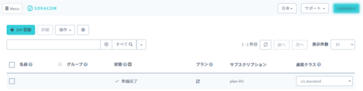
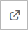
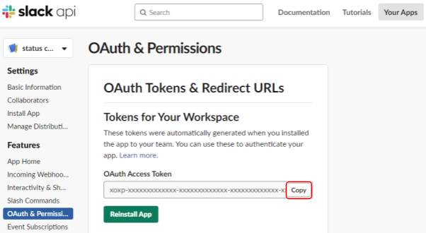

公開日: 2020年6月
レシピ難易度：★★★☆☆
4種のセンサーとバッテリーを内蔵した LTE-M 通信 IoT デバイス「GPS マルチユニット SORACOM Edition」の加速度センサーを活用して、「在席状況の自動更新デバイス」を作成します。デバイスの置き方で Slack 上のステータスを更新するレシピです。
本レシピを紹介した動画もご覧ください。
システムの構成
今回作成するシステムは以下のような構成となっています。
本レシピを行うのに必要な時間、概算費用
本レシピは以下の通りです。
- 必要な時間: 1時間30分
- 概算費用: 約11,100円
※ 概算費用: ハードウェアや SORACOM を始めとした各種サービスの概ねの費用 (税や送料などの付帯費用や無料枠適用は考慮しないものとしています)
このコンテンツの進め方
ページの内容を読み、また作業を行ったら右下の［Next］を押して次のステップへ進みます。また、［Back］を使って戻ったり、左のナビゲーションメニューでもページの移動が可能です。
左上の［×］を押してコンテンツを終了することができます。また、ページを開きなおすことで再開できます。ページのアドレスはブラウザの［履歴］メニューを利用してください。
本レシピを行うためには以下のものをご用意ください。
ハードウェア
品名 | 数量 | 価格 | 購入先 | 備考 |
GPSマルチユニットSORACOM Edition（バッテリー内蔵タイプ）スターターキット | 1 | 11,000円 | キットの中には以下のものが含まれています。
| |
パソコン | 1 | ― | ― |
|
(必要な方のみ) USB 型 AC アダプタ | ― | ― | ― | GPS マルチユニット SORACOM Edition の充電に利用します。パソコンからの給電でも代用可能です。 |
(必要な方のみ) ネームシール | ― | 100円 | ― | 100円ショップ等で入手可能です。デバイスの向きとステータスとの紐づけの備忘にお使いください。 |
※ 金額はレシピ作成時となります。ソラコムで販売している金額は税抜き・送料別です。
その他必要なもの
必要なもの | 費用 | 作成方法など |
SORACOM アカウント | 無料※ | |
AWS アカウント | 無料※ | |
Slack アカウント | 無料※ | https://slack.com/intl/ja-jp/ より作成可能です |
※ アカウント作成・維持の費用の料金です。
すでに AWS アカウントを持っている場合の確認事項
- ルートアカウントを利用する場合：特に確認すべき事項はありません。先に進んでください。
- IAM アカウントを利用する場合：AWS Lambda の関数作成および実行権限の有無を確認してください。また、必要権限の解説およびサポートは致しかねますが、AdministratorAccess ポリシーが割り当てられていれば当レシピは完遂可能です (同ポリシーを割り当てたことによる影響については IAM アカウント管理者にご相談ください)
すでに Slack アカウントを持っている場合の確認事項
- 職場の Slack ワークスペースなどを利用する場合、アプリのインストールが制限されている可能性があります。インストールできない場合は、個人用のワークスペースを作成してお試しいただくか、管理者の方に相談してください。
GPS マルチユニットは SIM を挿入することでセルラー通信 (LTE-M) を通じて、クラウドと連携できるようになります。そのため、まず GPS マルチユニットに同梱されている SIM を SORACOM へ登録をしましょう。
※ すでに登録済み、もしくは登録済みの別の SIM を利用する場合は次へお進みください。
登録の方法は発注済みの SIM を登録する(JP)をご覧ください。約5分で完了します。
登録が完了すると SIM 管理の一覧に表示されますので、確認ください。

SORACOM 特定地域向け IoT SIM (以下 SIM) をカードから切り離し、GPS マルチユニットの側面に挿入します。
GPS マルチユニットの側面を開け、SIM トレイ (赤色) を取り出す。
爪で引っ掛けるようにして取り出します。

SIM を SIM トレイに乗せる。
SIM トレイに収まるように SIM を乗せます。SIM の方向に気をつけてください。また、SIM トレイは無くさないようにしてください。

SIM トレイごと GPS マルチユニットに挿入する。
元々入ってた向きで SIM トレイごと SIM を GPS マルチユニットに挿入します。このとき、SIM トレイから SIM が飛び出ないように気をつけてください。

最後に側面を閉じて終了です。

GPS マルチユニットに挿入した SIM の IMSI (クレジットカードサイズのカードの裏面に記載されている15桁の番号) を使用しますので、すぐ取り出せるようにしておいてください。
ここでの作業は動画 (約1分) でもご覧いただけます。
GPS マルチユニットの設定は SORACOM ユーザコンソール上で行います。
SORACOM ユーザーコンソールにログインした後［Menu］>［ガジェット管理］>［GPS マルチユニット］とクリックします。
GPS マルチユニット管理画面が表示されます。ここには、GPS マルチユニットとして利用している SIM 一覧が表示されます。初めて利用する場合は「データが見つかりません」と表示されますが、正常です。
［新規デバイス設定］をクリックします。
GPS マルチユニットに挿入した SIM にチェックをつけてから［次へ：グループを選択］をクリックします。
複数 SIM を持っている場合は IMSI で見つけ出すようにしてください。
※図では「名前」を登録してあるため、見つけやすくなっています。

"新規グループを作成" をクリックし、グループ名入力してから［次へ：設定を編集］をクリックします。
グループ名は任意です。日本語も利用可能です。ここでは「GPSマルチユニット」としています。
GPS マルチユニットの設定を行います。
送信内容
「加速度」にチェックがついているようにします。(その他のチェックは外します)
送信先
「SORACOM Harvest (Lagoon)」 にチェックをつけます。

送信モード
「定期送信 ― 手動モード」にチェックをつけます。

定期送信 ― 手動モード 詳細設定
以下の通り設定します。
項目 | 設定値 | コメント |
送信間隔 |
| 初期値は |
期間 | （何も変更しません） | ― |
曜日 | 月 / 火 / 水 / 木 / 金 | 「常に送信する」のチェックを外すと変更できるようになります。 日、土 をクリックして OFF (白色) にします。 |
時刻 | 8:00 から 18:00 まで | 「常に送信する」のチェックを外すと変更できるようになります。 初期値は 0:00 から 23:59 となっているので、変更します。 |
ここまで入力が完了したら、最後に［保存］をクリックします。
すると以下のダイアログが表示されるので［デバイス一覧に戻る］をクリックします。

GPS マルチユニット管理画面に戻りますが、先ほど設定した SIM が一覧に表示されていることが確認できます。

設定を GPS マルチユニット本体に反映させる。
GPS マルチユニットのファンクションボタン（本体表面の四角のボタン）を1秒ほど押します。すると LED が緑色に点灯します。

GPS マルチユニット本体から SORACOM に保存されている設定情報を取得して設定が反映されます。また、設定が反映された GPS マルチユニットは新たな設定で動き続けるようになります。
以上で GPS マルチユニットの設定は終了となります。
SORACOM Harvest Data を利用して、設定が正しく反映されているか確認します。
GPS マルチユニット管理画面で、先ほど設定した SIM にチェックを付けて［データを確認］をクリックします。

以下のようにグラフが確認できます。SORACOM Harvest Data の操作として、画面左側のグラフ種類を選んだり、画面中央の「自動更新」で自動的に新たなデータを表示できたり、画面右側の表示する値を選択できたりします。
「bat(電池残量)」「rs電波強度)」「x (短辺方向の加速度)」「y (長辺方向の加速度)」「z (高さ方向の加速度)」「type(送信モード)」の 6つの値が1分間隔で送信されていれば、設定成功です。デバイスをひっくり返してみて、z の値が変わることを確認してみてください。
アプリの作成
Slack の「App」メニューを開き、右上のをクリックします。すると、ブラウザーが立ち上がります。
右上の [ビルド] をクリックします。
[Start Building] をクリックします。
アプリケーション作成画面にて App Name と Development Slack Workspace を設定し [Create App] を選択します。
項目 | 例 | 備考 |
App Name |
| 自由に入力可能です。 |
Development Slack Workspace |
| 利用しているワークスペースを選択してください。 |
ステータスを更新する権限を付与する
OAuth & Permissions タブへ移動します。
Scopes > User Token Scopes > [Add an OAuth Scope] をクリックしてドロップダウンメニューから users.profile:write 権限を選択します。なおこの権限はステータスだけでなく自身の氏名や電話番号といった情報も変更できてしまうので、次にコピーするトークンの取り扱いには十分注意してください。以下の画像のようになっていれば権限を付与できています。
トークンをコピーする
OAuth Tokens & Redirect URLs タブの上部より [Install App to Workspace] をクリックします。
権限がリクエストされたら [許可する] クリックしてください。
OAuth Access Token が発行されるので [Copy] をクリックして控えます。

AWS Lambda 関数を作成する
AWS マネジメントコンソールのサービス一覧より Lambda を選択し、[関数の作成] をクリックします。
関数名やランタイムを指定して [関数の作成] をクリックします。
項目 | 例 | 備考 |
関数作成のオプション |
| - |
関数名 |
| 自由に入力可能です。 |
ランタイム |
| Node.js ランタイムを選択します。当レシピは 12.x で検証しました。 |
環境変数に Slack のトークンを設定する
環境変数 > [環境変数を管理] をクリックします
[環境変数の追加] をクリックして各キーと値を設定します。その後、[保存] をクリックします。
キー | 値 |
| 控えておいた Slack のトークン |
以下のようにキー・値が見られれば環境変数の設定は完了です。(以下の画像では一部値をマスクしています)
関数のコードを設定する
関数コードにて、以下の内容で上書きします。上書きしたら [保存] をクリックして Lambda の設定は完了です。
const https = require('https');
const url = require('url');
const slackToken = process.env.SLACK_TOKEN;
const slackUrl = "https://slack.com/api/users.profile.set";
exports.handler = function(e, ctx, cb) {
console.log('event: %j', e);
console.log('context: %j', ctx);
var slackReqOptions = url.parse(slackUrl);
slackReqOptions.method = 'POST';
var payload =
e.type == 1 ? { "profile":{"status_text": "", "status_emoji": ""}}
: e.z > 900 ? { "profile":{"status_text": "lunch break", "status_emoji": ":rice:"}}
: e.x > 900 ? { "profile":{"status_text": "coffee break", "status_emoji": ":coffee:"}}
: e.x < -900 ? { "profile":{"status_text": "concentrating", "status_emoji": ":male-technologist:"}}
: { "profile":""}
;
var body = JSON.stringify(payload);
console.log("body: %j", body);
var auth = "Bearer " + slackToken;
slackReqOptions.headers = {
"Authorization": auth,
'Content-Type': 'application/json; charset=utf-8',
'Content-Length': Buffer.byteLength(body),
};
var req = https.request(slackReqOptions, function(res) {
if (res.statusCode === 200) {
console.log('Posted to slack');
console.log('res: %s',res);
cb(null, {"result":"ok"});
} else {
cb(false, {"result":"ng", "reason":'Failed to post slack ' + res.statusCode});
}
return res;
});
req.write(body);
req.end();
};作成した AWS Lambda のテスト
マルチユニットからの実データを送信する前に、AWS Lambda 単体でテストしてみましょう。[テストイベントの選択] > [テストイベントの設定] をクリックします。
イベント名を任意に指定し、以下のテストイベントを入力し [作成] をクリックします。
{
"bat": 3,
"rs": 4,
"x": 0,
"y": 64,
"z": 960,
"type": 0
}作成したテスト名が選択されていることを確認して、[テスト] をクリックしてください。
Slack のステータス表示が変更されていたら、テスト成功です。
(参考) コードの解説
コードの以下の部分で、置き方に応じてステータスを変更しています。
var payload =
e.type == 1 ? { "profile":{"status_text": "", "status_emoji": ""}}
: e.z > 900 ? { "profile":{"status_text": "lunch break", "status_emoji": ":rice:"}}
: e.x > 900 ? { "profile":{"status_text": "coffee break", "status_emoji": ":coffee:"}}
: e.x < -900 ? { "profile":{"status_text": "concentrating", "status_emoji": ":male-technologist:"}}
: { "profile":""}
;それぞれ、以下のような条件を表しています。status_textやstatus_emojiを自分の好きなものに変えてみてください。Slackの絵文字コードはこちらのリファレンスを参考にしてください。
条件 | status_text | status_emoji | 解説 |
| 空白 | 空白 |
|
|
|
|
|
|
|
|
|
|
|
|
|
| - | - |
|
SORACOM Funk から AWS Lambda へ連携できるよう、ARN (Amazon Resource Name) をコピーし、控えておきます。
SORACOM Funk から AWS Lambda を呼び出すためには、IAM ユーザーの認証情報が必要となります。ここでは IAM ユーザーを作成し、認証情報を取得します。
IAM ポリシーを作成する
IAM ユーザーには AWS 上のリソースに対する権限である IAM ポリシーを付与します。セキュリティリスクを極小化するために、先ほど作成した Lambda を実行する権限だけを持つ IAM ポリシーを作成します。
AWS コンソールより Identity andAccess Management (IAM) メニューを開き、[ポリシー] をクリックします。
[ポリシーの作成] をクリックします。
新しくポリシーの作成画面が表示されるので、それぞれ設定していきます。まず、「サービスの選択」では今回連携したい Lambda を選択します。 次の「アクション」では、検索ウィンドウに InvokeFunction と入力してそれを選択します。 3つ目の「リソース」では、[ARN の追加] をクリックして ARN の指定で先ほどコピーした ARN を貼り付けます。
以上の設定が終わったら、[ポリシーの確認] ボタンをクリックします。
ポリシー名を指定して [ポリシーの作成] をクリックします。
IAM ユーザーを作成する
AWS コンソールより Identity andAccess Management (IAM) メニューを開き、[ユーザー] をクリックします。

[ユーザーを追加] をクリックします。
任意のユーザー名を設定しアクセスの種類にて [プログラムによるアクセス] にチェックを入れ、[次のステップ : アクセス権限] をクリックします。
アクセス許可の設定では、既存のポリシーを直接アタッチを選択したあと、先ほど作成したポリシー名で検索します。ポリシーをチェックして、[次のステップ : タグ] をクリックします。
タグは特に不要なので何も入力せず [次のステップ : 確認] をクリックします。

以下の項目を確認して [ユーザーを作成] をクリックします。
確認項目 | 値 |
AWS アクセスの種類 | プログラムによるアクセス - アクセスキーを使用 |
管理ポリシー | 作成した管理ポリシー |
IAM 認証情報をコピーする
IAM ユーザーが作成されると、認証情報が発行されます。アクセスキー ID やシークレットアクセスキーを控えておきます。これらは再発行できないので、[.csv のダウンロード] をクリックして csv ファイル形式でダウンロードしておくと良いでしょう。

SORACOM Funk から AWS Lambda を呼び出すための設定をおこなっていきます。
作成したIAMユーザ情報をソラコムの認証情報ストアへ登録する
ユーザーコンソールの右上にあるユーザー名をクリックし ［セキュリティ］をクリックします。

［認証情報ストア］> ［認証情報を登録］をクリックします。
下記の情報を認証情報として登録します。
項目 | 例 | 備考 |
認証情報 ID |
| 自由に入力可能です |
概要 |
| 自由に入力可能です |
種別 |
| - |
AWS Access Key ID |
| - |
AWS Secret Access Key |
| - |
SORACOM Funk の設定をする
GPS マルチユニット管理画面から、設定するマルチユニットをクリックして [グループ設定変更] をクリックします。
[基本設定］ >［SORACOM Funk 設定］をクリックして設定ができるように開き情報を設定します。
項目 | 例 | 備考 |
（スイッチ） | ON | - |
サービス |
| - |
送信データ形式 |
| - |
認証情報 |
| 認証情報ストアに登録した認証情報を指定してください。 |
関数の ARN |
| 作成した Lambda ファンクションの ARN を指定してください。 |
マルチユニットを裏返したり立てたりすることで Slack のステータスが変わることを確認しましょう。また、ファンクションボタンを押すことでステータスがリセットされることを確認しましょう。このレシピで提供したサンプルコードではそれぞれの置き方に応じて Slack 上では以下のようなステータスになることを想定しています。
ファンクションボタン（本体表面の四角のボタン）は1秒ほど押す必要があります。LED が緑色に点灯すれば送信できています。
トラブルシューティング
Slack 上のステータスが更新されない場合は、以下のポイントを確認してください。
時間が十分に経過しているか
マルチユニットの「デバイス設定」にて設定した送信間隔分のタイムラグがあります。送信間隔は最短で1分です。設定した内容を確認して、時間をおいてみてください。
SORACOM Harvest Data にデータが格納されているか
マルチユニットは SORACOM Unified Endpoint を経由して SORACOM Harvest Data と SORACOM Funk との両方にデータを送信しています。SORACOM Harvest Data 上にデータが格納されているかをもとに、以下を切り分けてください。
- 時間が十分に経過しているにもかかわらず SORACOM Harvest Data 上でデータが確認できない場合は、電波状況などでマルチユニットからデータが送信できていないことが考えられます。場所を移動し、ファンクションボタンを押してみてください。
- SORACOM Harvest Data 上でデータが確認できるものの Slack のステータスが変わっていない場合は SORACOM Funk や AWS Labmda の設定が原因と考えられます。AWS Lambda のログが出力されているかを確認してください。
AWS Lambda のログが出力されているか
AWS Lambda では関数の編集画面にて「モニタリング」タブの「CloudWatch Logs Insights」より関数の実行ログを確認できます。このログをもとに、以下を切り分けてください。
- ログが出力されていない場合、SORACOM Funk から AWS Lambda にデータが送信できていないことが考えられます。SORACOM Funk が有効になっているか、認証情報の設定が正しいか確認してください。
- ログが出力されているにもかかわらず Slack のステータスが更新されていない場合は、何かログにエラーなど出力されていないか確認してください。
本レシピでは費用がかかるサービスを利用しています。
本項をよく読み、必要な操作や解除作業を行うようにして、想定外の費用が掛からないようにしてください。
費用について
ここで記載している金額は全て税別、送料別となります。
SORACOM プラットフォームの利用料金
サービス／機能 | 料金 |
(今回の利用であれば 1MB 以内で収まる範囲) | |
| |
|
※ 費用詳細はリンク先をご確認ください。
今回の目安
加速度センサーの値のみで1分毎に送信し、Unified Endpoint 経由で SORACOM Harvest Data と SORACOM Funk 両方に送信した場合、1時間当たりのデータ通信量は上り 約11.5 KiB、下り 約13.0 KiB となります。(SORACOM Funk のみにした場合、上りは11.5KiBとほとんど変わりませんが、下りは4.0KiB と削減できます。)
今回はデバイスの送信設定を「一日あたり 8:00 ～ 18:00 の10時間」と「月～金の週5日」としています。
これらを基に1日あたりのデータ通信に係る費用は、以下のようになります。
データ通信量 (plan-D データ通信のみ / s1.minimum) | 3 円 ※ |
基本料 (plan-D データ通信のみ) | 10 円/日 ※ |
計 | 13 円/日 |
- ※ 1日(10時間)あたりのデータ通信量は上りが 115 KiB、下りが 130 KiB としています。
- ※ 土日はデータ送信は行いませんが、基本料金は発生します。
これに加えて、SORACOM Harvest Data や SORACOM Funk 、そして AWS 費用が発生することになります。SORACOMやAWSの各種サービスはオンラインでお見積りが可能となっています。SORACOM 料金見積もりツール / AWS Pricing Calculator
グループ解除
SORACOM Harvest Data 等、「機能が有効になっているグループに所属している SIM × 費用」となっているサービスにおいては、「機能を OFF にする」することで費用の発生を抑えることができます。またもう1つの方法として「グループに所属している SIM の数を減らす(= 解除する)」事でも費用を抑える事ができます。
グループ解除の方法はグループからの解除 (JP)をご覧ください。
SORACOM Harvest Data のデータ削除
SORACOM Harvest Data は基本的にはデータ保管料は無料※です。そのため、保存しておいても害はありませんが、デモ等で利用する際にはデータを綺麗にしておく必要が出てくるため、データ削除について解説します。
※発生から40日を超えたデータは削除されます。40日以上データを保管したい場合はデータ保持期間延長オプション利用料金をご利用ください。
SORACOM Harvest Data 画面 (［操作］>［データを確認］) のデータテーブルで、削除したいデータのチェックボックスを付けた後に［削除］をクリックします。表示されたダイアログで改めて［削除］をクリックすると、削除されます。
※ 複数のデータにチェックをつければ一括で削除可能です。

データの復元はできませんのでご注意ください。
本レシピでは、GPS マルチユニット SORACOM Edition が持つ「加速度センサー」で置かれ方をセンシングし、その情報を「自分の状態」として意味を持たせました。このように、センサーは意味付けによって幅広い活用の仕方ができる例として紹介いたしました。SORACOM Funk の利用で各種クラウドの FaaS と連携による自分だけのアプリケーション構築も、サーバの構築などせずとも実現できる事が体感いただければ幸いです。
ここからの発展アイデア
- 状態の履歴を Google Spreadsheet へ記録 (参考: AWS IoT Enterprise ButtonのデータをGoogle Spreadsheetに記録する)